Explore Córdoba
A Brief History
Córdoba was founded in 1573 as a Spanish entrepôt linking Upper Peru to the Atlantic. Jesuit Block university colleges, colonial cabildo, and Serrano foothills record how clerical education shaped Argentina's interior before Buenos Aires dominance. Serrano foothill gateways and university cloisters link the colonial city to Argentina's central sierras.
Attractions Map
Top Sights & Activities
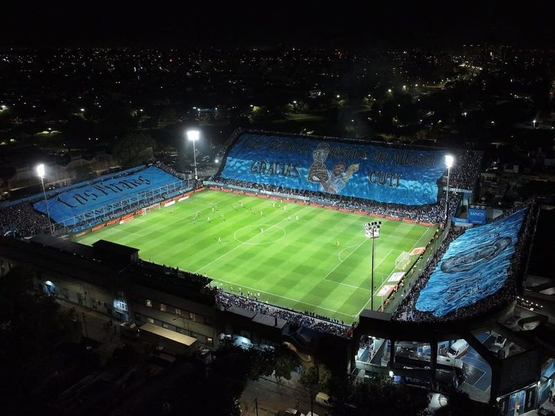
Estadio Julio César Villagra
After undergoing recent improvements, the Estadio Julio César Villagra has evolved into a charming venue for spectators. With its upgrade in capacity, this stadium offers an enjoyable experience for fans attending various events. It exudes a nostalgic atmosphere reminiscent of traditional sports arenas where the essence of old-fashioned soccer can be felt. Additionally, it is regarded as the home ground of one of the greatest clubs ever to exist.
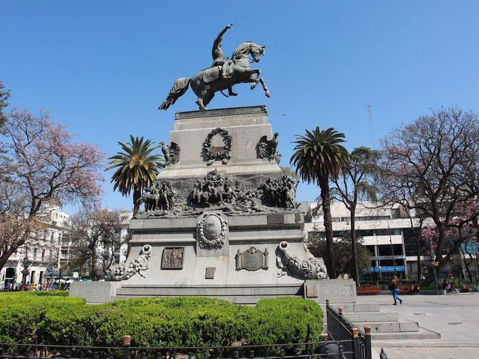
Plaza San Martin
Plaza San Martin is a and historic square that dates back to the 16th century, serving as the heart of Cordoba. This bustling plaza features majestic trees and a striking bronze equestrian monument dedicated to General Jose de San Martin, who played a pivotal role in Argentina's liberation. Established by Spanish settlers in 1577, it was meticulously designed to be at the center of a grid layout encompassing 70 blocks.
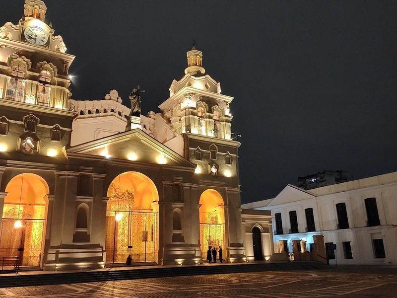
Teatro Real
Teatro Real is a venue that captivates visitors with its impressive architecture and rich cultural offerings. This theater showcases a variety of performances, including traditional plays, musicals, and dance shows that leave audiences in awe. The seating is designed for comfort, ensuring an enjoyable experience from any location within the theater.
Paseo Sobremonte
The Paseo Sobremonte park is situated in front of the city's neoclassical courthouse, boasting a verdant plaza adorned with benches and a circular fountain. This charming place attracts many visitors due to its tranquil ambiance and picturesque surroundings. One notable feature is the abundance of trees and lush grass, providing ample seating areas for individuals seeking relaxation or leisurely strolls.
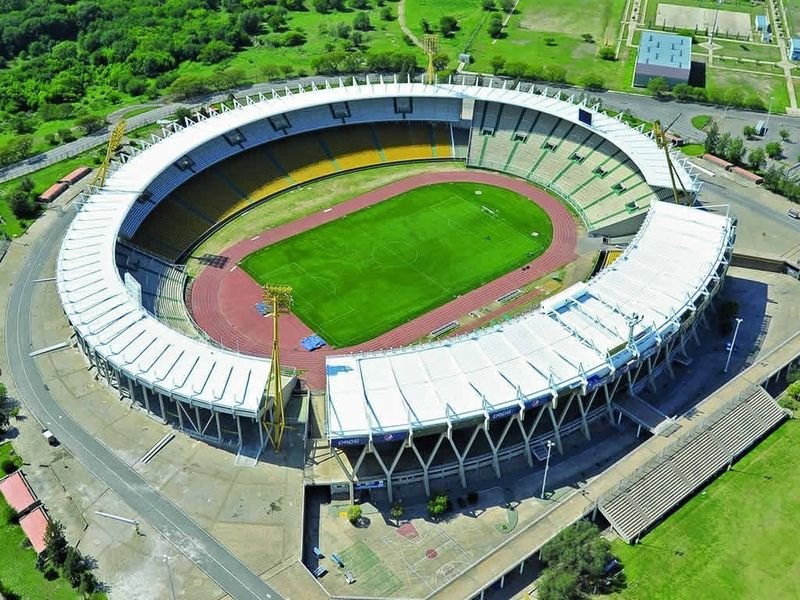
Estadio Mario Alberto Kempes
Nestled in the Chateau Carreras neighborhood of Cordoba, Argentina, the Estadio Mario Alberto Kempes is a historic soccer stadium that was originally built for the 1978 World Cup. Named after the legendary Argentine footballer Mario Alberto Kempes, this venue not only hosts thrilling football matches but also accommodates various sports events and athletics competitions.
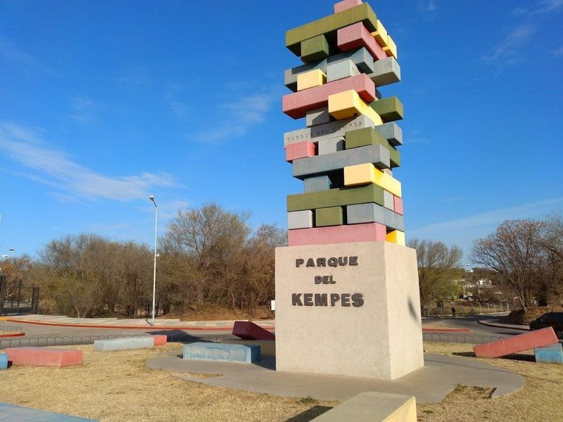
Parque del Kempes
The Parque del Kempes is a picturesque park, situated next to the Mario Kempes stadium. It boasts a natural setting, complete with lush forests and a serene river. While the park could benefit from some additional maintenance, there are various paths available for walking or biking alongside the riverbank. The park also offers sports trainers and ample parking facilities.
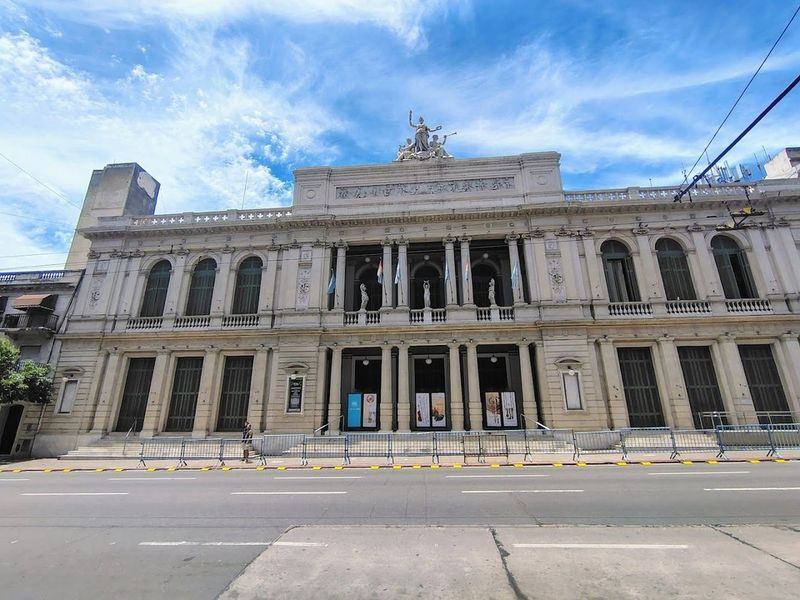
Teatro del Libertador General San Martín
Teatro del Libertador General San Martín is a historic and opulent theater located next to Park Sarmiento in Cordoba. Built in 1891, it serves as a center for cultural and performing arts, offering a venue for various shows and performances. The theater's European-style architecture adds to its charm, making it an enchanting sight to behold even from the outside.
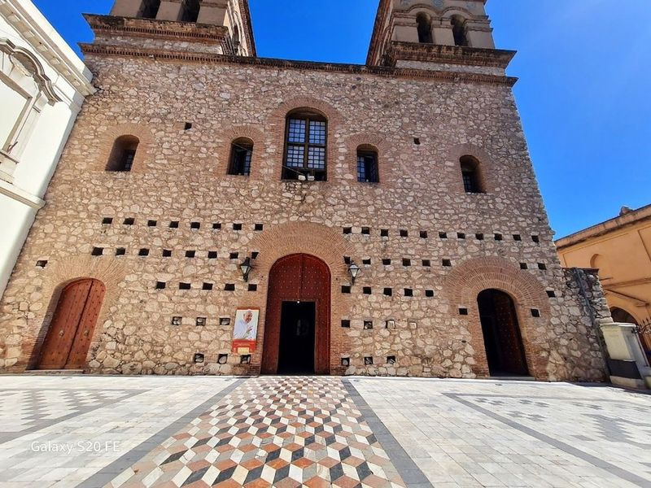
Society of Jesus Church
The Society of Jesus Church stands as a testament to history and artistry in Cordoba. This sacred space invites visitors to capture its beauty through photography, showcasing exquisite wood carvings adorned with gold accents and a magnificent wooden roof. As one of the city's world heritage sites, it offers a serene atmosphere where appreciate the intricate details, including depictions of Maria Magdalena near the entrance and chapel.
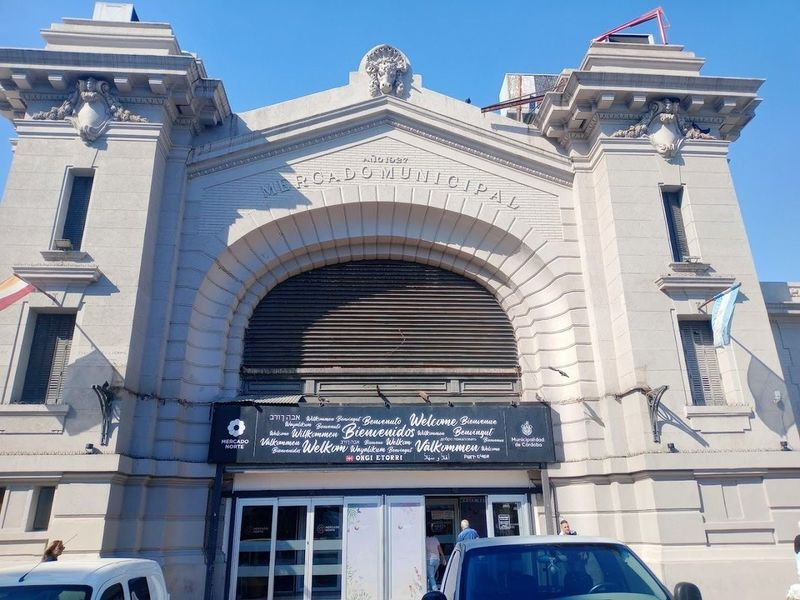
Mercado Norte
If you're looking to dive into the local flavors of Cordoba, a visit to Mercado Norte is an must. This market is a treasure trove of fresh produce and traditional Argentine delicacies, offering everything from mouthwatering empanadas to succulent steak sandwiches at affordable prices.
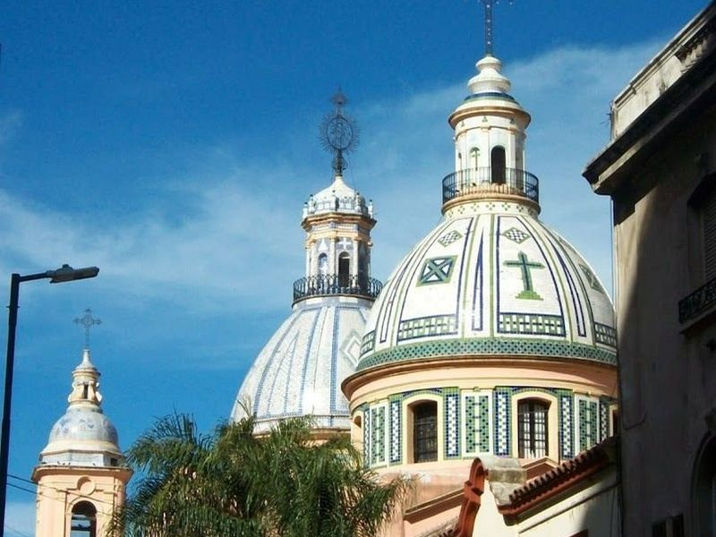
Basílica de Santo Domingo
The construction of the Basilica of Santo Domingo in Cordoba, Argentina, dates back to the 16th century when the Dominican order was established. The seminary and church were carefully planned by the order, with visible evidence of flood damage from Arroyo de La Canada found in its foundation. Olegario Correa initiated the construction of this magnificent church in 1857, which was later inaugurated in 1861.
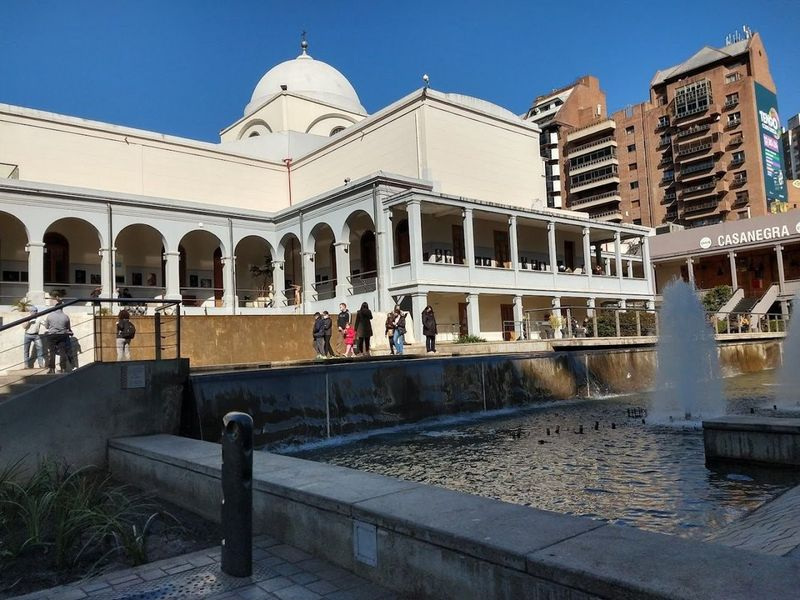
Paseo del Buen Pastor
Paseo del Buen Pastor is a cultural institution in Argentina that offers art and photo galleries, as well as various dining options. It is located at the intersection of 9 de Julio pedestrian street and features a system of pedestrians and galleries. The area also includes green spaces for picnics, an exhibition gallery showcasing local art, and hourly water fountain shows. This popular spot is frequented by students from different provinces who gather in Nueva Cordoba.
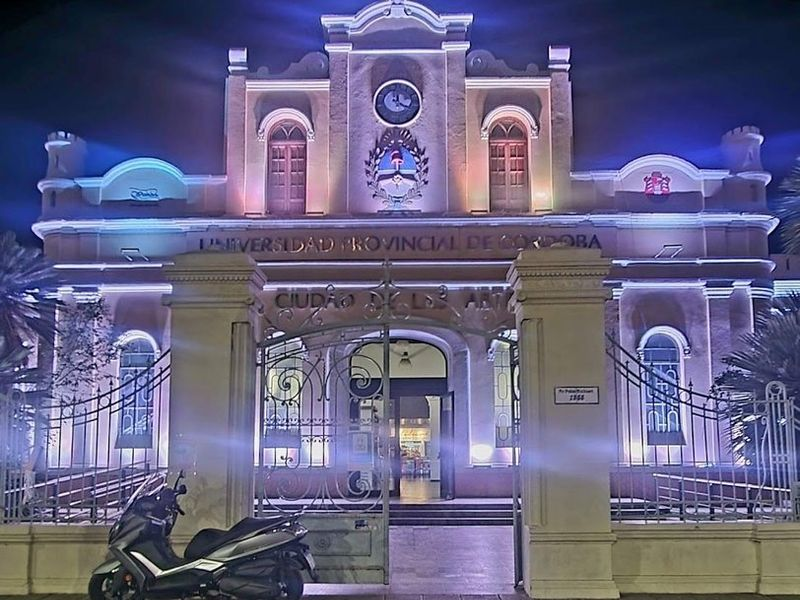
Teatro Ciudad de las Artes
Teatro Ciudad de las Artes is an outstanding destination for families, offering a superb experience in a spacious setting. The performing arts theater boasts an excellent ambiance and provides ample space for visitors to enjoy cultural performances. It is suitable for all ages, making it ideal for family outings and gatherings. With its impressive size and top-notch facilities, Teatro Ciudad de las Artes ensures a remarkable time filled with entertainment and enjoyment.
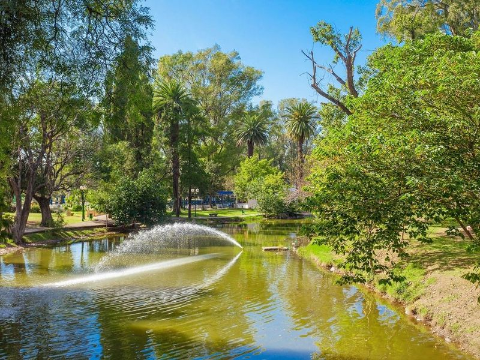
Sarmiento Park
Sarmiento Park, located in Cordoba, is a spacious and well-maintained green space that offers various recreational activities. It features picnic areas, walking paths, and an artificial lagoon where visitors can rent boats for a leisurely ride. The park also houses the old Ferris wheel known as 'Around the World' and an adjacent Zoological Garden. In the summer months, both locals and tourists flock to this urban oasis to relax under the shade of trees or engage in sports activities.